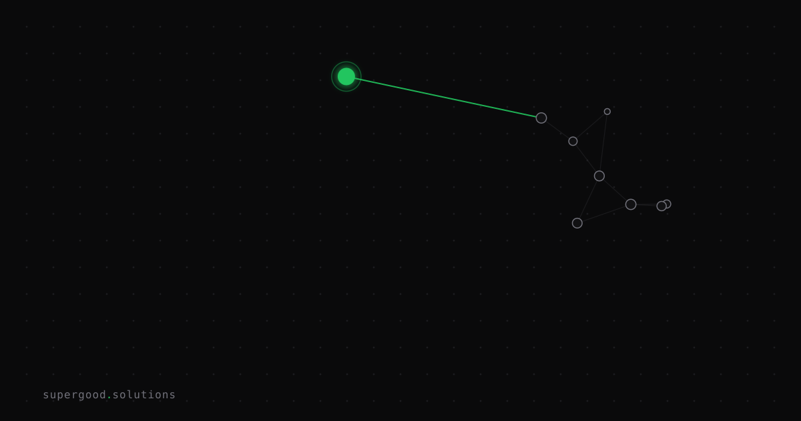

Agent-Readable Websites Will Break Your Enterprise Content Strategy
TL;DR: AI agents now consume your website directly — not to surface it to humans, but to answer questions on their behalf. If your content isn't structured for machine parsing, it won't be cited, summarized, or trusted — and your enterprise effectively disappears from the AI layer of the web.
Key Insight
Your SEO team optimized for Google. Your UX team optimized for humans. Nobody optimized for the agent.
That's the gap that's quietly eating enterprise visibility right now. When a procurement manager asks their AI assistant to compare vendor capabilities, the assistant doesn't open three browser tabs. It fetches, parses, and synthesizes. If your product page is buried under JavaScript-rendered carousels, navigation chrome, and vague brand language — the agent either skips you or hallucinates your capabilities from training data (which is probably six months stale).
The shift is real: as of 2026, the majority of web research is now mediated by AI interfaces before it ever reaches a human. You're not writing for readers. You're writing for the intermediary that briefs the reader.
Why Teams Miss This
Enterprise content teams are still playing the 2022 game: keyword density, backlinks, scroll depth, time on page. These metrics made sense when Google was the gatekeeper. They're increasingly irrelevant when the gatekeeper is an LLM agent doing a tool call.
The common assumption is that "good content" automatically works across formats. It doesn't. An eloquent 2,000-word thought leadership piece full of metaphors and hedged claims gives an AI agent almost nothing to work with. It can't extract a clear answer. It can't confirm a fact. It moves on.
Three failure modes we see repeatedly:
- Buried specifics: Key facts (pricing ranges, integration support, compliance certifications) are buried in PDFs or buried five scroll-lengths deep on a page the agent won't parse thoroughly.
- Ambiguous entities: Content says "our platform" and "the solution" instead of naming the product explicitly — so the agent can't correctly attribute capabilities.
- No machine-readable surface: No
llms.txt, no JSON-LD schema markup, no.mdmirrors of key docs pages. The agent either guesses or abstains.
How to Actually Do It
Step 1: Add /llms.txt to your domain.
The llms.txt standard proposes a simple markdown file at your root that gives LLMs a curated index of your most important content — with links to clean markdown versions of those pages. Think of it as robots.txt for AI agents, except instead of telling them what to skip, you're telling them what to read and in what order.
A minimal version looks like this:
# Acme Corp
> B2B infrastructure for payments processing. SOC 2 Type II certified.
## Products
- [Payments API](https://acme.com/docs/payments-api.md): REST API for card processing, ACH, and wire transfers.
- [Fraud Shield](https://acme.com/docs/fraud-shield.md): ML-based fraud detection, sub-50ms latency.
## Company
- [About](https://acme.com/about.md): Founded 2019, HQ in Austin TX, 200 employees.
- [Security](https://acme.com/security.md): Compliance certifications, penetration test cadence, incident response.The format is intentionally minimal. Agents parse it, follow the links, and get clean text instead of fighting your nav, cookie banners, and lazy-loaded components.
Step 2: Audit your key pages for entity clarity.
Run your five most important product pages through any LLM and ask it: "What does this company do, and what specific claims can you verify from this page?" The answer will tell you exactly how machine-parseable your content is. If the model hedges, infers, or says "the page implies" — you have a clarity problem.
Fix: name your product explicitly in every section. Replace "our solution helps teams" with "[ProductName] reduces [specific outcome] by [measurable amount] for [specific customer type]." Boring for humans. Gold for agents.
Step 3: Surface structured data for facts that matter.
Add JSON-LD schema markup for your core entities. For a software product, that means SoftwareApplication schema with explicit applicationCategory, featureList, and offers. For a service firm, ProfessionalService with areaServed and hasOfferCatalog. These are not optional embellishments — they're the machine-readable layer that lets agents confirm facts without relying on prose.
{
"@context": "https://schema.org",
"@type": "SoftwareApplication",
"name": "Acme Payments API",
"applicationCategory": "FinanceApplication",
"featureList": ["ACH transfers", "Card processing", "Fraud detection"],
"offers": {
"@type": "Offer",
"priceCurrency": "USD",
"price": "0.25",
"description": "Per transaction, volume discounts at 10k+/mo"
}
}Step 4: Write in Fact-Block paragraphs for high-value pages.
Agents have limited context windows and prioritize content where the direct answer appears early. Restructure product pages so the first 100 words answer: what is this, who is it for, what does it do specifically, and what proof exists. Drop the aspirational opener. Start with the fact.
What We've Learned
Run this audit on your own site before your next content refresh cycle:
curl https://yourdomain.com/llms.txt— does it exist?- Paste your homepage into Claude or GPT and ask "what does this company do and what are three specific, verifiable claims?" Score the answer.
- Check your five highest-traffic pages for JSON-LD via the Google Rich Results Test.
If you score poorly on all three, your content strategy is invisible to the agent layer. That's not a 2027 problem. It's already costing you citations, trust signals, and pipeline from AI-assisted research workflows — right now.
The content teams that get this right in 2026 will have a compounding advantage. Agents learn from what they can read.
Sources
- llms.txt specification and proposal: The community standard for agent-readable website indexes.
- FastHTML docs llms.txt example: Real-world implementation of the llms.txt pattern.
- AEO Signal — Machine-Readable Content Guide 2026: Benchmarks on AI citation rates for structured vs. unstructured content.
- Google Rich Results Test: Tool for validating JSON-LD structured data.
- Schema.org SoftwareApplication type: Reference for software product structured data.